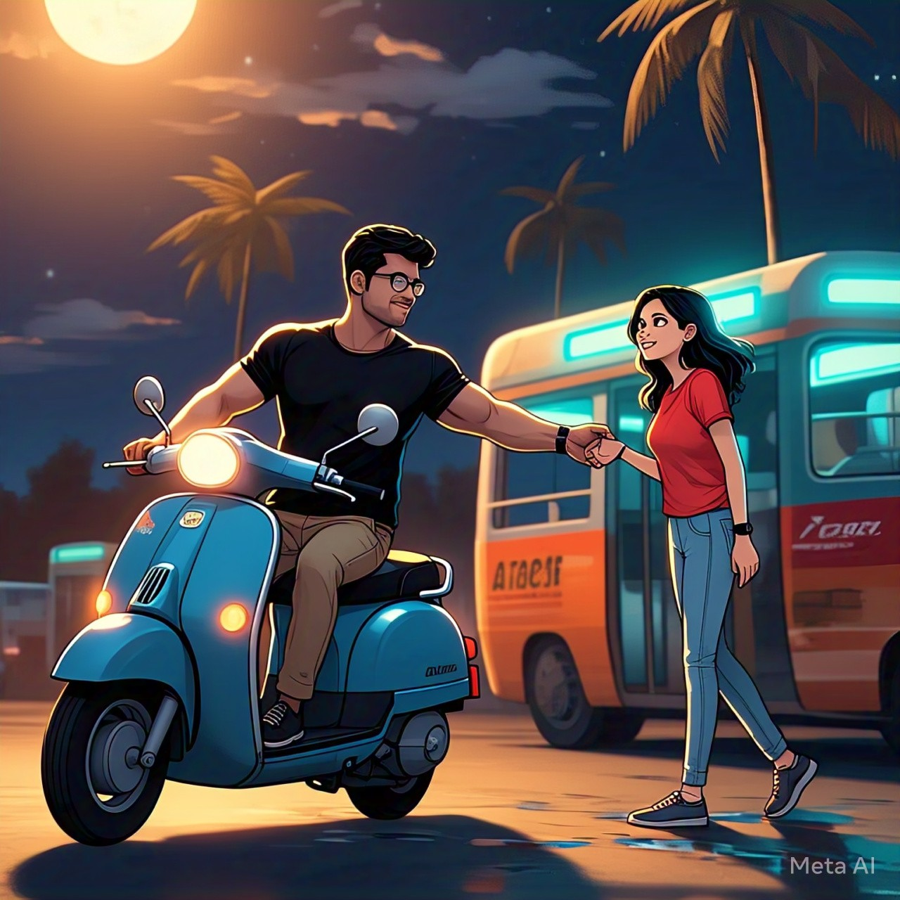
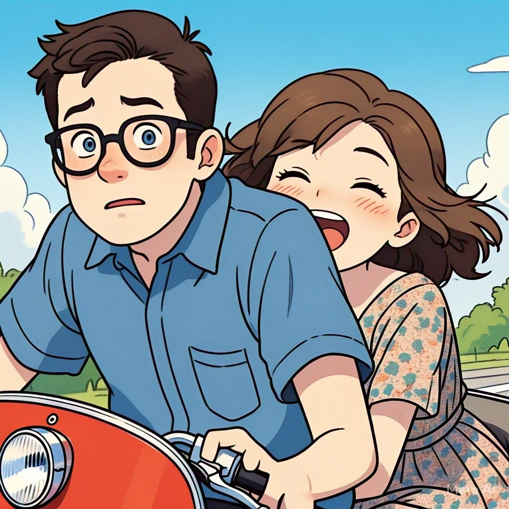

Moodo bhagam - Prema Edi manaki antha easy ga dorakadu, okavela dorikindi ante, daani kosam manam chaala kastapadali nilabettu kovadam kosam. Ilaaa velliddaru chalaa easy ga kalisina, kalisi undatam lo kastam ayindi. Chalaa time pattindi. Entha ante oct 11 na kalisina vallu, close ayyi undataniki april 3 daka pattindi. Almost 5 months. Vaathavaranam lo vache maarpulu kannaa goppavi, manishi jeevitham lo vachevi. Edi epudu elaa jaruguthado telidu. April 3rd raane vachindi, manasa bday. Apudee intiki velladaniki bus book chesukundi. Prema lo doorapu pradesham daggarainattu, nivas kosam lb nagar ki velindi. Nature will help you at right time to get the things done - alaaa 12 daate daaka bus raaled. Correct ga 12 ki manasa cheyya pattukuni wish chesad thanu. Manasa life lo for the first time 12 ki baytaa undatam, first time okaru cheyya pattukuni wish cheyadam antha daggariga, first time 12 ki gift ivvadam. Nivas ki elaa unna, manasa ki chala speciall. Oka black watch thanaki gift ichad. Antha andamaina moments gadipaaka intiki vellali ani evarikaina anipisthada. Ledhu ga, alaa moham muduchukuni bus ekki koorchundi. Bus start avvaled ga, raa kindaki ani pilichad nivas. Nuv pilavadame late anattu kindaki digindi. Aa nimisham, aaa second nivas thana hand ni manasa ki icchi, thanaki daggariga thana scooty meeda koorchuni laagaadu. That's where manasa felt awweeeee butterflies in her.
There the story started. Second part lo manasa nivas ki teliyakunda telsukunaa vihshayalu annii okkoti okkoti ga nivas ki cheppedi, enti na venka intha kutra jaruguthundaa ani shock ayyevaadu bandi meeda thanani hostel daggara drop chesthu...
Manasa evari daggara unantha open ga undedhi nivas tho allari allari chesthuu, chilipi chesthalatho. Thana allarini anthee enjoy chesevadu nivas. Amma paala packet kosamooo panchadara kosamooo pakkana unna shop ki Vellamante vissukunne manam, thana kosam thana tho spend chese konni gantala kosam, chalaa dooram nundi nivas inti nundi vachevad. Entha sep unnaa, nivas velipotha ane time ki manasa ki vadalali anipichedi kaadu. Kaani ala ani unchesukoledu kadaa.... The story got continued as Manasa inti nundi started. Nivas ooty trip lo. Then they disclosed there feelings. Okaru ante inkokariki istam ani apudu ardamaindi. Veella parichyam eee cinematic ga ayindi, love type story start avvadam lo ela thagguthadi. Aaagamegaaalaloo nivas trip nundi Return vachad direct ga manasa daggariki april 11. Night time, middle of the street, evar chuttu leru thana Kosam oka blue frock techad. There happened the first heart to heart touch through lips.